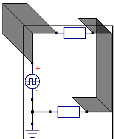
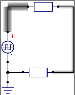
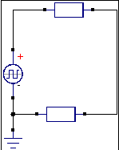

There are three different options how voltages can be drawn. From these options, one can be selected in the dialog for creating an analysis
The aquaeduct model is the standard model for this program. It is inspired by roman aquaeducts.

1: The highest aquaeduct/the highest voltage is at the positive connection of the source, in the top left corner
2: The lower aquaeduct is at the right side of the image, between the two resistors, because here the voltage is lower than at source (electronic explaination see at wikipedia)
3: An aquaeduct with the height of zero is at the lower-left side of the image: this node is connected to the ground flag. By definition, every wire connected to ground has zero voltage versus ground.
(*) At the moment of the program, the depency between the height of the aquaeduct and the voltage is a simple
positive linear proportional depency: aquaeduct_height = C x voltage
where C is a constant, which is calculated individually for each analysis depending on the maximal voltage.
But in future, also non-linear and discrete depencies are planned to implement

Another option to draw voltages is to make wires with high voltages "shine":
This option has the advantage, that it takes less space on the screen than the aquaeduct model, but it has the disadvantages that it can not display voltages below ground: All voltages at or below ground are represented by no shining. Also it shows the exact voltage value less exact than the aquaeduct model
Because of that, the shining wire option is not suited well for many analog circuits, but it is made mostly for digital circuits, where it is enough to know if a wire is at HIGH or LOW.
In this image all voltages are at or above zero, so here all "shining wires" can be drawn correctly. But here the reader can not conclude the exact voltage of the wire at the right side of the image from the intensity of the shining: In this example the voltage at source it twice as high as between the resistors (the two resistors her have the same value) , but the shining between the resistors looks less than half as intense than at source.

You can opt-out any drawing of voltages, for example if you want to draw currents only.